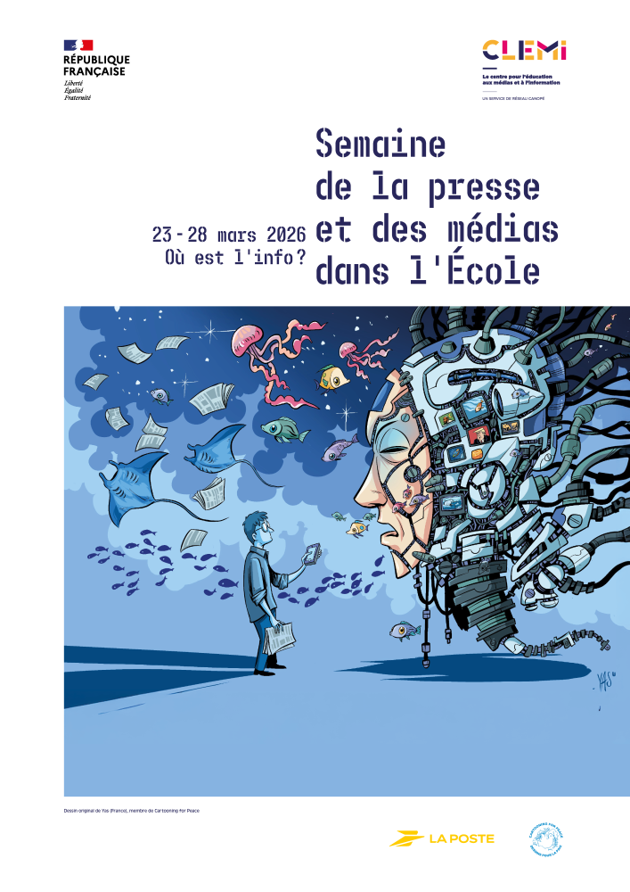
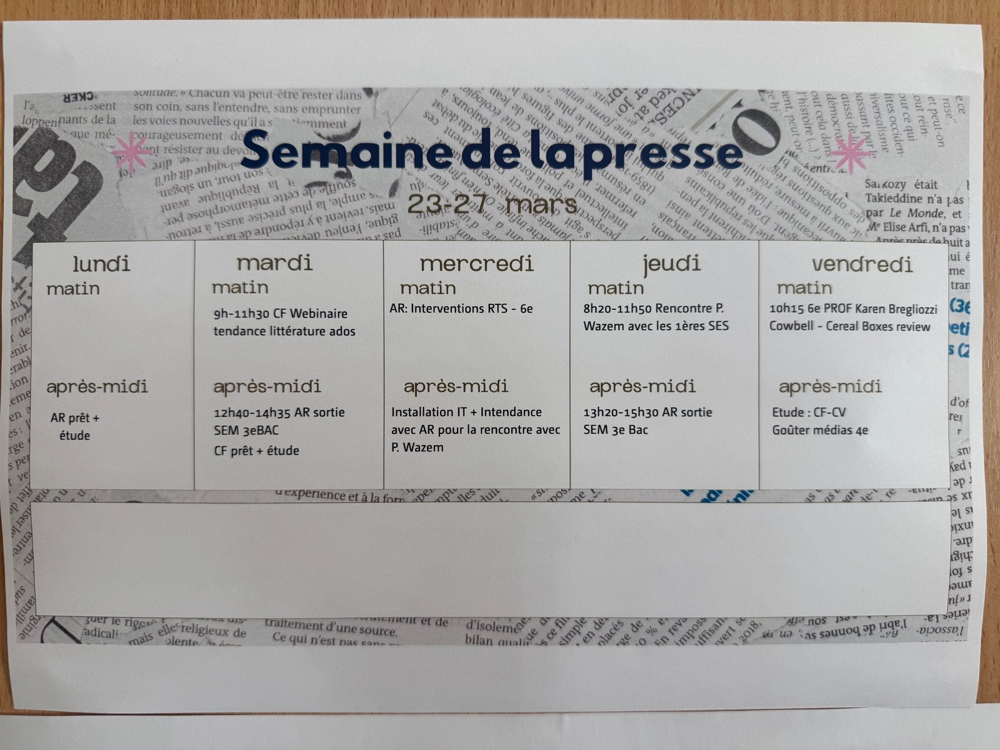

Projet EMI à l'Institut Florimont
Projet EMI et Semaine de la presse et des médias : conception, adaptation et suivi de plusieurs dispositifs pédagogiques menés dans le cadre de mon stage au CDI secondaire de l'Institut Florimont.
- Emplacement
- CDI secondaire, Institut Florimont, Genève
- Date
- Janvier – mai 2026
- Rôle
- Stagiaire bibliothécaire-documentaliste
- Type de projet
- Médiation documentaire / EMI / projet pédagogique
- Contenu
- Conception de supports, adaptation aux publics scolaires, travail en lien avec l'équipe pédagogique
Projet EMI et Semaine de la presse et des médias
Ce projet a été mené dans le cadre de mon stage au CDI secondaire de l’Institut Florimont, à Genève, durant mon Master 2 Gestion de l’information et médiation documentaire. Il s’inscrit dans les actions conduites à l’occasion de la Semaine de la presse et des médias, en lien avec l’équipe du CDI et plusieurs enseignant·es de l’établissement.
Cette expérience m’a permis de participer à la conception, à l’adaptation et au suivi de plusieurs dispositifs pédagogiques liés à la médiation documentaire, à la lecture critique de l’information et à l’éducation aux médias et à l’information. Elle m’a aussi confrontée à des contextes de mise en œuvre très différents selon les niveaux, les formats horaires et les modalités de collaboration avec les enseignant·es.
Contexte de la Semaine de la presse et des médias
La Semaine de la presse et des médias a constitué un cadre privilégié pour développer des actions articulant information, pédagogie et médiation. Dans ce contexte, plusieurs séances et projets ont été conçus pour différents niveaux, avec des formats variables et des objectifs adaptés aux classes concernées.
Le travail mené dans ce cadre ne relevait pas d’un dispositif unique, mais d’un ensemble d’actions complémentaires : séances courtes ou longues selon les niveaux, supports destinés aux enseignant·es, outils pour les élèves, projet autour d’un auteur, et dispositif de retour d’expérience à travers un quiz de feedback.
Note sur le document de cadrage : l’image du planning général de la Semaine de la presse et des médias a été réalisée par ma tutrice de stage. Elle est présentée ici comme document de contexte et d’organisation du projet.


Séances conçues pour les 4e
Les séances destinées aux classes de 4e ont été pensées pour être mises en œuvre dans un format très court, en début de journée, pendant le temps de titulature, avec les professeurs titulaires de la classe. Ce cadre de dix minutes constituait une contrainte forte, qui rendait la mise en place du dispositif particulièrement exigeante.
Dans un temps aussi resserré, il fallait aller à l’essentiel, proposer une entrée immédiatement compréhensible, capter l’attention rapidement et construire un support suffisamment clair pour être utilisé dans un cadre très contraint. Cette situation m’a amenée à réfléchir à la densité des contenus, à la hiérarchisation de l’information et à la nécessité de concevoir un support à la fois simple, efficace et immédiatement mobilisable.
J’ai eu l’occasion d’assister à la mise en œuvre de ce dispositif dans l’une des classes, avec une enseignante de français également titulaire. Cette observation m’a permis de mieux comprendre les conditions concrètes de réception de la séance, le rôle joué par l’enseignante dans son appropriation, ainsi que les ajustements nécessaires dans un format aussi bref.
Supports associés
Cette partie peut regrouper le support de séance 4e, les éventuels documents de cadrage, ainsi que toute fiche synthétique liée au format court.
Séances conçues pour les 3e
Les séances destinées aux classes de 3e s’inscrivaient elles aussi dans le cadre de la titulature, mais bénéficiaient d’un format beaucoup plus long, sur une période complète d’environ 45 minutes. Cette durée permettait d’envisager un travail plus développé, avec un déroulé plus structuré, des échanges plus approfondis et une progression pédagogique plus lisible.
Ce changement d’échelle modifiait fortement les conditions de conception. Il devenait possible d’introduire davantage de contenu, de mieux articuler les étapes de la séance, d’intégrer des supports plus élaborés et de penser plus finement l’enchaînement entre présentation, activité et appropriation. Le travail ne consistait plus seulement à condenser un message, mais à construire une séquence plus complète, adaptée au rythme d’une période de cours.
J’ai pu assister à la mise en œuvre de ces séances dans trois classes, ce qui m’a permis d’observer plus précisément la manière dont elles étaient reçues, les écarts de dynamique selon les groupes, ainsi que les ajustements opérés par les enseignant·es. Cette observation a nourri ma réflexion sur la souplesse nécessaire des dispositifs pédagogiques, sur les effets du cadre de classe, et sur la place des supports dans l’accompagnement des apprentissages.
Supports associés
Cette partie doit regrouper ensemble les supports destinés aux élèves, le support destiné aux enseignant·es, le PowerPoint / diaporama, ainsi que tout autre document préparatoire ou d’accompagnement lié aux 3e.
Projet Pierre Wazem
Le projet autour de Pierre Wazem apparaissait séparément, car il relevait d’une logique différente de celle des séances conçues pour les 3e et les 4e.
Ce dispositif a été élaboré pour deux classes de 1re spécialité SES, en lien avec deux enseignantes d’économie. Nous avons construit ce projet ensemble, dans une dynamique de collaboration entre contenus disciplinaires, médiation culturelle et préparation à une rencontre avec un auteur.
Ce travail ne se limitait pas à une séance ponctuelle : il s’inscrivait dans une temporalité plus large, avec une phase de préparation, des supports associés et une articulation plus forte entre contenus de cours, projet culturel et appropriation par les élèves. Cette page en présentait surtout le cadre, sa logique de construction et les documents déjà produits.
Ce projet m’a permis d’expérimenter une autre forme de médiation, davantage centrée sur la rencontre d’auteur, la préparation collective et la co-construction avec les enseignantes.
Supports associés
Cette partie peut inclure les supports préparatoires, les documents de séance, les éventuels documents liés à la venue de Pierre Wazem, ainsi que les supports à destination des classes ou des enseignant·es.
Évaluation et retour d'expérience
Dans le cadre de ce projet, j’ai également conçu un quiz de feedback destiné à recueillir les retours des participants sur les séances proposées. Cet outil d’évaluation visait à mesurer la réception des contenus, à identifier les points forts du dispositif et à repérer d’éventuels ajustements pour de futures interventions.
L’intérêt de ce quiz réside dans sa double fonction : il permet à la fois de produire un retour d’expérience sur les actions menées et d’inscrire le projet dans une démarche plus réflexive d’amélioration continue. Il constitue ainsi une trace concrète du travail de conception, mais aussi de la prise en compte de la réception des dispositifs par leurs destinataires.
Retour analytique
Ce projet m’a permis d’approfondir plusieurs dimensions importantes de la médiation documentaire et pédagogique. Il m’a d’abord confrontée à la nécessité d’adapter un même enjeu à des formats très différents : dix minutes en 4e, quarante-cinq minutes en 3e, projet plus long et collaboratif pour les 1res. Cette diversité m’a amenée à réfléchir plus finement à la construction des supports, à la hiérarchisation des contenus et à l’adaptation aux conditions concrètes de mise en œuvre.
Il m’a également permis de mieux comprendre la place de la collaboration avec les enseignant·es dans la réussite de ce type de dispositif. Selon les classes et les formats, leur rôle dans la transmission, l’appropriation ou l’animation pouvait être décisif. Cette expérience a ainsi renforcé chez moi l’idée que la médiation en contexte scolaire s’inscrit toujours dans une dynamique de coopération.
Enfin, ce travail a confirmé mon intérêt pour les projets qui articulent documentation, pédagogie, médiation et réflexion critique sur l’information. Il m’a permis de développer une approche plus concrète des enjeux liés à l’EMI, tout en consolidant des compétences de conception, d’observation, d’adaptation et d’analyse réflexive.